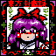
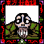
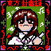
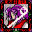
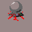
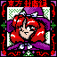
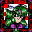
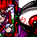

Touhou Fuumaroku ~ the Story of Eastern Wonderland
HomeUnless otherwise stated, all translations are copied from here.
Here among the mountains in a certain eastern land lies the relatively peaceful Hakurei Shrine. To strengthen her spiritual power, Reimu, the shrine's only maiden, had withdrawn into the mountains to train for a bit of training.
"Training? That's been going all right, but suddenly I want to sleep in my futon!"
she said, and made up her mind to return to the shrine. But when she got back there, she found the place infested with youkai and other crazed, inhuman freaks.
Reimu: What's all this!? I won't be able to get to sleep with this going on... Very well, I can show you the fruits of my training!
But Reimu hated training, and her real aim in going to the mountains was relaxing in their many hidden hot springs and savoring the delicious autumn foods. Between these pursuits, she hadn't done very much actual training.
Genjii: My lady, these youkai seem strangely controlled. Their leader must somewhere nearby. I can also somehow sense the power of a foreign culture... in any case, I suppose I shall be accompanying you.
Genjii, Reimu's loyal turtle servant, said worriedly.
Reimu: I was going to take you anyway. After all, I can't fly...
Then Reimu took Genjii and, as always, the secret treasure of Hakurei Shrine: the Yin-Yang Orb. To find the source of the problem, she faced the shrine to exterminate the youkai. Though she would meet many strange people in many strange places...
Reimu (like Eriko Asagawa): Heh, sure is strange.
Character Backgrounds
Heroine - Reimu Hakurei

A shrine maiden of Hakurei Shrine, who possesses natural-born spiritual power but lacks training. She exterminates youkai by attacking with amulets, firing her spiritual power called Spiritual Attack and releasing the power of Yin-Yang Orb.
She's such an optimist that she doesn't worry at all even in this emergency, and believes she can solve all incidents with her power.
This time, she (somehow) fights riding on the turtle.
Turtle Genjii

A turtle who's lived a long life and gained many powers.
Reimu captured him one day during training and has worked him hard ever since.
He has the power to fly freely through the sky.
Rika

Stage 1 Boss, Extra Stage Boss.
Meira

Stage 2 Boss.
Five Magic Stones

Stage 3 Boss.
Official name unknown.
Marisa

Stage 4 Boss.
Mima

Final Stage Boss.
Rika/Evil Eye Σ

Extra Stage Boss.